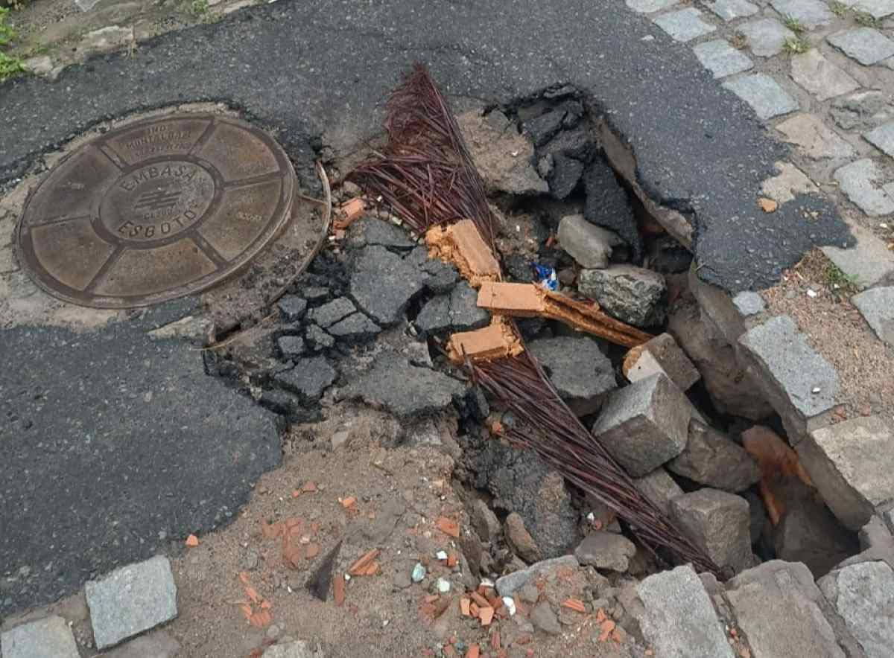
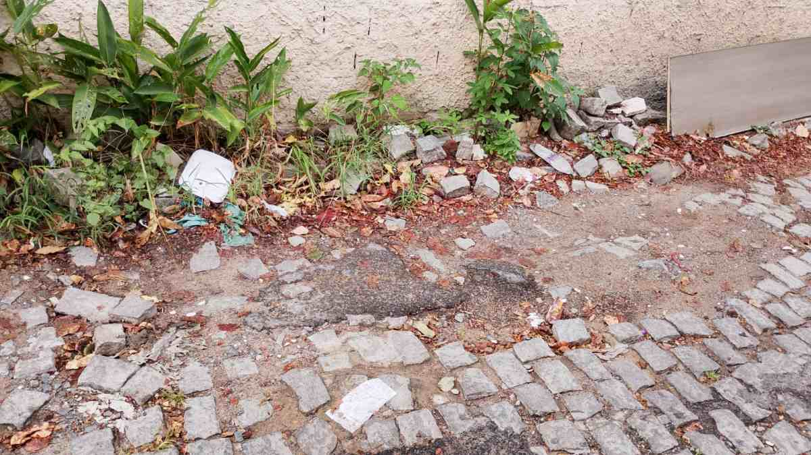

Repórter Davi
Notícias de Feira de Santana e Região
Repórter Davi
Notícias de Feira de Santana e Região
Publicado em 03/03/2026

Rua Vandinha, no bairro Caseb
Constantes são as reclamações dos moradores de Feira de Santana a respeito de ruas intransitáveis, acúmulo de lixo, mato alto e buracos nas vias do município.
A Rua Granito, no bairro Pedra do Descanso, é um dos alvos de reclamação. O local não tem nenhum tipo de calçamento e, para piorar, os paralelepípedos se misturam com a lama, intensificada em períodos chuvosos. “Como é que a gente paga nossos impostos, nossos encargos, e mora numa situação dessas aqui? É complicado… Complicadíssimo”, contou Willian, morador da Rua Granito.
Situação similar acontece na Rua Vandinha, no bairro Caseb. Sem calçamento e pavimentação, torna-se difícil se locomover na via, especialmente em dias chuvosos, podendo ocasionar uma queda.
Na Rua A do conjunto Jomafa, um buraco se abriu. Os moradores utilizaram placas e estruturas de madeira para sinalizar o vão, na tentativa de evitar acidentes.
No conjunto Jomafa, na entrada do caminho 35, um buraco também se abriu, mas desta vez, não há sinalização alguma aos motoristas e pedestres. De acordo com Augusto, morador da região, um carro ficou atolado no buraco devido ao rompimento da boca de lobo. Agora, o caminho está interditado.

Caminho 35, no conjunto Jomafa
É necessário atenção à Rua Leôncio Ramos Gomes, no bairro Brasília, próxima ao cruzamento da Rua Senador Quintino com a Avenida João Durval. O calçamento está se desfazendo e, nas extremidades da via, o descarte irregular de lixo e a vegetação crescente começam a se intensificar. Para que os paralelepípedos não se soltem cada vez mais, torna-se indispensável uma manutenção.

Rua Leôncio Ramos Gomes, no bairro Brasília
Um córrego vem incomodando os residentes da Rua José Gonzaga Sobrinho, no Conjunto Alvorada, no bairro Gabriela. O córrego apresenta muito mato, terra e entulhos, o que deixa a água atingir o nível máximo. “Acredito que na próxima chuva forte que tiver, vai transbordar. Nós moradores da Rua José Gonzaga Sobrinho pedimos socorro para que seja feita a limpeza o mais rápido possível”, solicita a moradora Sinthia.